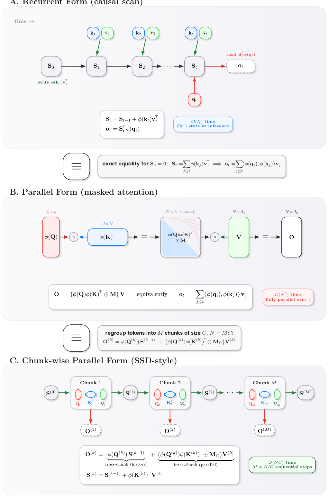
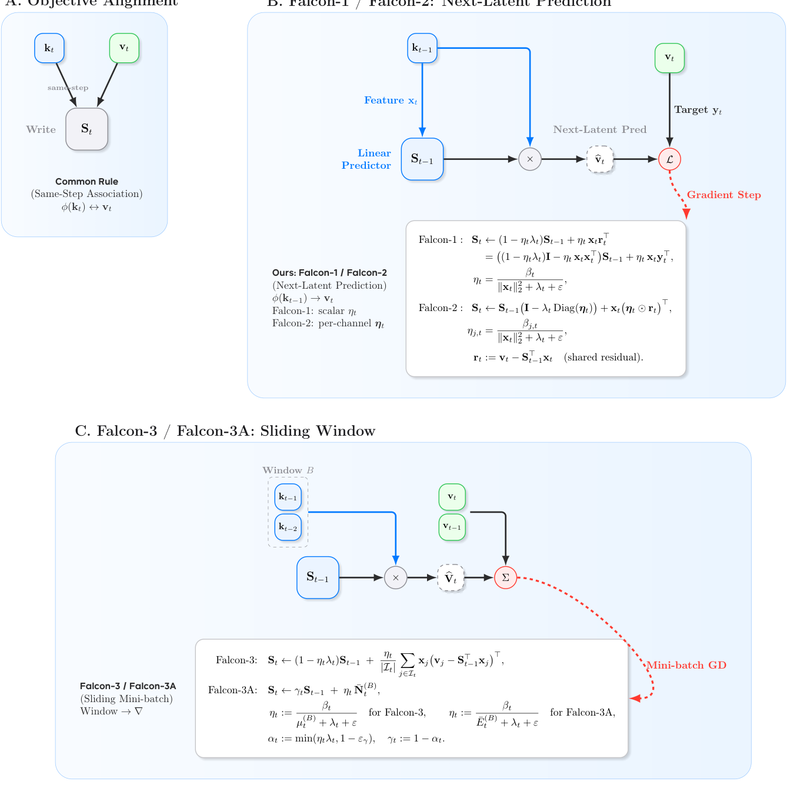
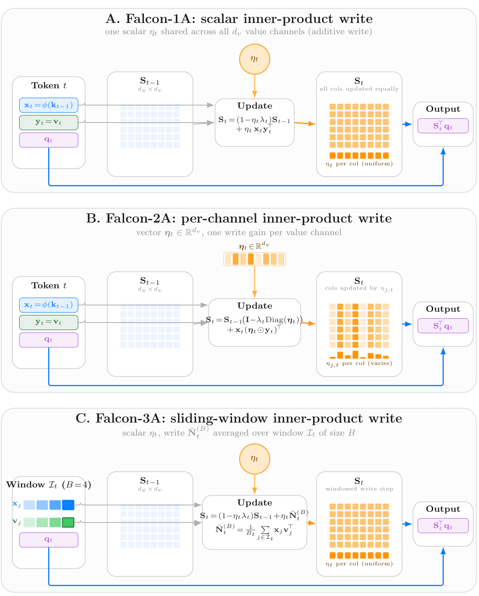
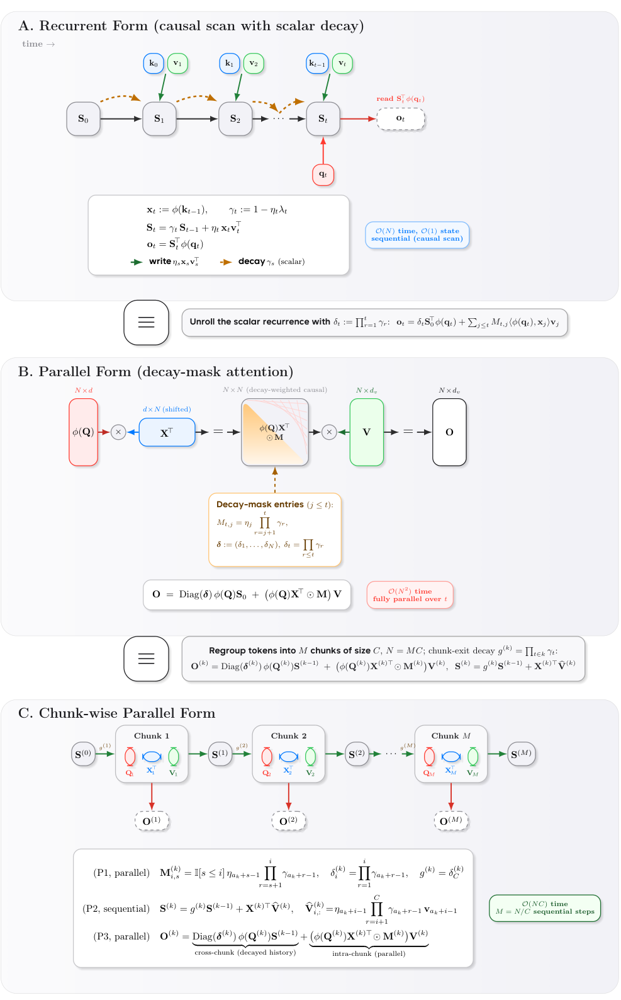
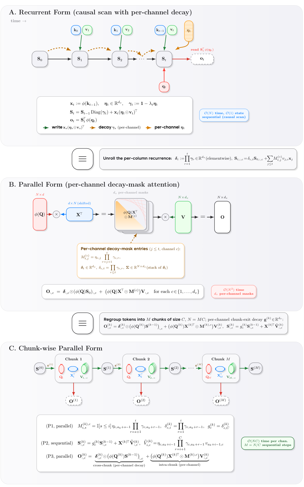
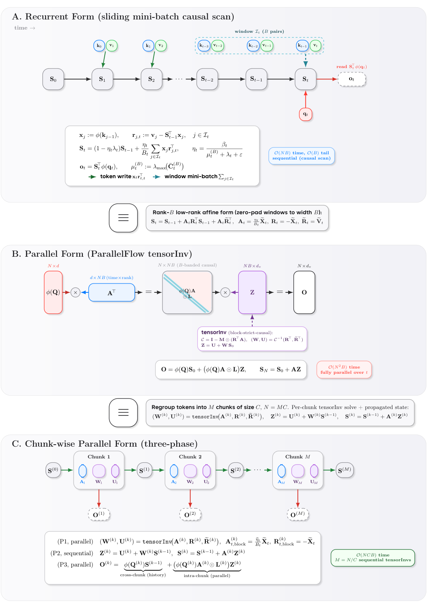

递归快速权重记忆与选择性状态空间模型（Mamba、RWKV、DeltaNet、Linear Attention）都把增长的上下文压缩进固定大小的递归状态，从而把状态转移视作一条在线学习规则。这篇论文从「读后写」自回归语义出发，把这整类规则统一重铸为在线持续学习，并导出一族显式的归一化更新规则（Falcon）。
本文为论文深度解读（arXiv:2608.27763，ByteDance Seed × Princeton × 清华，含姚期智），11张原图全保留，关键技术（推导、更新方程、归一化）已按原文展开。
把递归状态S当作快速权重（fast weight）：这段固定大小的记忆在每一时间步读一次、写一次。读的是用它预测下一个latent，写的是根据预测误差去修正它：读后写（read-after-write），先消费已写好的记忆，再改动记忆。
统一设定：在步t，写特征x(t)=ϕ(k(t−1))（上一时间步的键经特征映射），新观测目标y(t)=v(t)；读出ot=S(t−1)⊤·ϕ(q(t))。全部变体共享这一因果对 (x(t), y(t)) = (ϕ(k(t−1)), v(t))，且边界初值x(1)=0、η(1)=0。
「时间对齐」由此成为第一个要分离的因子：到底是把状态绑定到「同一步的 (ϕ(k(t)), v(t))」还是「前缀对齐的 (ϕ(k(t−1)), v(t))」：这正是DeltaNet与Falcon的分野，我们在后文展开。
先把更新规则写成自回归的线性回归问题。设状态S(t−1)∈R(dx×dv) 是一个线性预测器，输入写特征x(t)=ϕ(k(t−1))，目标y(t)=v(t)。瞬时平方误差损失：f(t)(S)=½·‖S⊤·x(t) − y(t)‖²。
对更新前的状态求梯度：残差r(t)=y(t) − S(t−1)⊤·x(t)，则梯度 ∇f(t)(S(t−1)) = x(t)·(S(t−1)⊤·x(t) − y(t))⊤ = −x(t)·r(t)⊤。
做一步在线梯度下降（OGD）、学习率 η(t)，就得到经典的Delta更新：S(t) = S(t−1) − η(t)·∇f(t) = S(t−1) + η(t)·x(t)·r(t)⊤ = (I − η(t)·x(t)·x(t)⊤)·S(t−1) + η(t)·x(t)·y(t)⊤。

关键：把k(t−1) 换回k(t)（即x(t)←ϕ(k(t))），就精确还原了Schlag等人的「无移位DeltaNet更新」。也就是说：标准DeltaNet就是「同一步」变体，而Falcon家族用「前缀对齐」的前一步写特征。差异只有一个时间索引，却直接决定了优化的内部目标。
同一步写「(ϕ(k(t)), v(t))」看起来因果自洽，像一个缓存式关联。但自回归预测的时刻是t−1：真正在那个时刻「可用的信息」是 ϕ(k(t−1))，而v(t) 是之后才观察到的目标。
把状态绑到当前写特征 ϕ(k(t)) 上，相当于用尚未到来（对本步解码）的信息去更新记忆：在快速记忆的「读后写」目标下，匹配的是欠对齐的内部目标。

Falcon则显式使用前缀对齐对：用旧特征预测新目标，与新观察真正共现。作者证明：在自回归读-写分离语义下，前缀对齐变体才与「读后写」学习一致。时间对齐（temporal alignment）因此是Falcon框架分离出的第一个持续学习因子。
Falcon由「回归 / 内积」两种目标函数 与「标量 / 逐列 / 滑动窗口」三种可塑性动力学 交织成6个变体。下标1/2/3 = 标量、逐列、滑动窗口；后缀A = 内积目标。
回归族（平方误差，DeltaNet风格）： · Falcon-1（标量NLMS）：S(t)=(1−ηλ)·S(t−1) + η·x(t)·r(t)⊤，步长 η=β/(‖x‖²+λ+ε)。 · Falcon-2（逐列）：每个值通道一个独立步长：S(t)=S(t−1)·(I−λ·diag(η)) + x(t)·(η⊙r(t))⊤，η(j)=β(j)/(‖x‖²+λ+ε)，共享残差r(t)=v(t)−S(t−1)⊤x(t)。 · Falcon-3（滑动窗口）：在活跃窗口I(t) 内做小批量回归S(t)=(1−ηλ)·S(t−1) + (η/|I|)·Σ(j∈I) x(j)·(v(j)−S(t−1)⊤x(j))⊤，步长 η=β/(μ(B)+λ+ε)。


内积族（负内积对齐，Linear Attention / Mamba-2风格）：把「残差回归写」换成「直接目标写」： · Falcon-1A：S(t)=(1−ηλ)·S(t−1) + η·x(t)·v(t)⊤，η=β/(E+λ+ε)。 · Falcon-2A：S(t)=S(t−1)·(I−λ·diag(η)) + x(t)·(η⊙v(t))⊤。 · Falcon-3A：S(t)=(1−ηλ)·S(t−1) + η·N̄(B)，用窗口平均目标写N̄(B)=B⁻¹·Σ x(j)·v(j)⊤，η=β/(Ē(B)+λ+ε)。
内积族的步长要读作「能量归一化的写入增益」，不是曲率匹配的分母：因为 λ=0时目标在S上线性、没有有限极小，梯度下降直接退化为纯加性的Hebbian写入。
softmax注意力用缩放点积 ⟨q,k⟩/√d天然控制范数；快速权重递归则对查询/键范数直接敏感：(i) 点积读出随 ‖q‖·‖k‖ 增长，(ii) 加性（内积）写入随写特征范数增长。在长解码视野、混合精度（FP16/BF16）下，这两个来源都会让训练失稳。

作者用RMSNorm对 (q(t), k(t)) 投影做归一化：RMSNorm(u)=u/√(‖u‖²/d+ε·rms)。RMSNorm让坐标量级保持 Θ(1)：‖RMSNorm(u)‖²≈d（在 ‖u‖²≫d·ε 时）。这比常见 ΔNet/Gated DeltaNet实现里的 ℓ2归一化在混合精度下明显更稳定。value归一化（VNorm）默认关闭。
正衰减再归一化（positive-decay renormalization）：不再让衰减随步长任意游走，而是由参数结构推导出衰减分数 α(t)=η(t)·λ(t)，并钳制到 α(t)=min(ηλ, 1−ε_γ)、γ(t)=1−α(t) 以确保数值稳定的正衰减。遗忘（forgetting）由此成为Falcon显式分离的第二个持续学习因子。
Falcon-3把单步OGD升级为滑动窗口上的小批量更新：维护名义大小B的活动窗口I(t)（实际B(t)=|I(t)|≤B），一次对窗口内所有因果对 (x(j), v(j)) 做一步小批量回归（或内积）。

Falcon-3的步长用窗口平均统计归一化：回归族用 μ(B)=λ_max(B⁻¹·Σ x(j)x(j)⊤)（窗口内特征协方差的主特征值，即数据项局部平滑尺度）；内积族Falcon-3A用能量统计 Ē(B)=B⁻¹·Σ‖x(j)‖² 来控制写入量级。
「有界回看」（bounded rehearsal）由此成为第三个持续学习因子：窗口大小B限制了模型能回看多远的「最近样例」，本质上是显式控制记忆对远近信息的权重，同时天然兼容分块并行训练。
Falcon的核心方法论贡献，是把快速权重模型里纠缠在一起的因素显式拆开： ·时间对齐（Temporal alignment）：用前缀对 (ϕ(k(t−1)), v(t)) 而非同一步对：决定快速记忆训练用的信息是否真实可用。 ·可塑性（Plasticity）：更新步长 η 与动力学选择（标量/逐列/窗口）。 ·遗忘（Forgetting）：衰减因子 α=ηλ 与 γ=1−α 的推导式控制。 ·有界回看（Bounded rehearsal）：Falcon-3窗口大小对「最近样例」的记忆范围。

统一范式：无论回归还是内积，所有变体都提供递归、掩码并行、分块并行三种计算形式（recurrent / masked-parallel / chunk-parallel），并配数值稳定的正衰减再归一化：因此都能用标准训练循环高效地跑到语言模型规模。
语言建模（124M-130M，50B token，FineWeb-Edu）：FineWeb-Edu验证困惑度（Table 1）上Falcon-1.3综合最强、PPL 17.10；最强基线Gated DeltaNet 17.32；回归族Falcon-1.3内积族Falcon-1A.3最优（17.40）。下游评测（Table 2）Falcon-1A.2零样本均值最佳（49.30）、Falcon-1.3循环一次性均值最佳（49.54）。

消融表明：QK-RMSNorm相对QK-ℓ2提升FineWeb-Edu困惑度；上下文条件化的步长 η（而非 β）在零/一次样本均值上更优：验证了「对齐 + 归一化」的更新能在保持语言质量的同时带来受控算术增益。
变长算术加法（受控压力测试隔离因果存储与外推）：训练宽度1–32位、测试33–48位强迫教学，Falcon-3A.3外推最强、平均准确率87.2，Falcon-1A.3以85.9次之，均超基线（含RetNet / LightningAttn / Transformer）。在存储与进位传播主导时，「移位+归一化」的更新外推良好。


① 统一视角：把大量快速权重 / DeltaNet / SSM更新规则统一重铸为「在线持续学习（带显式快速记忆目标）」，并指出常见「同步写入」优化的内部目标与「读后写」前缀预测不一致：标准DeltaNet是同一步版本，Falcon用前缀对齐修正之。
② 归一化更新族：导出Falcon-1/2/3（回归）与1A/2A/3A（内积）的规范化首阶更新，含滑动窗口小批量变体，提供递归/掩码并行/分块并行三种形式，天然兼容chunk-parallel训练。
③ 分离持续学习因子：显式分离时间对齐、可塑性、遗忘、有界回看；语言建模保持竞争力，内积族显著改善算术长度外推。
参考：https://www.alphaxiv.org/pdf/2608.27763